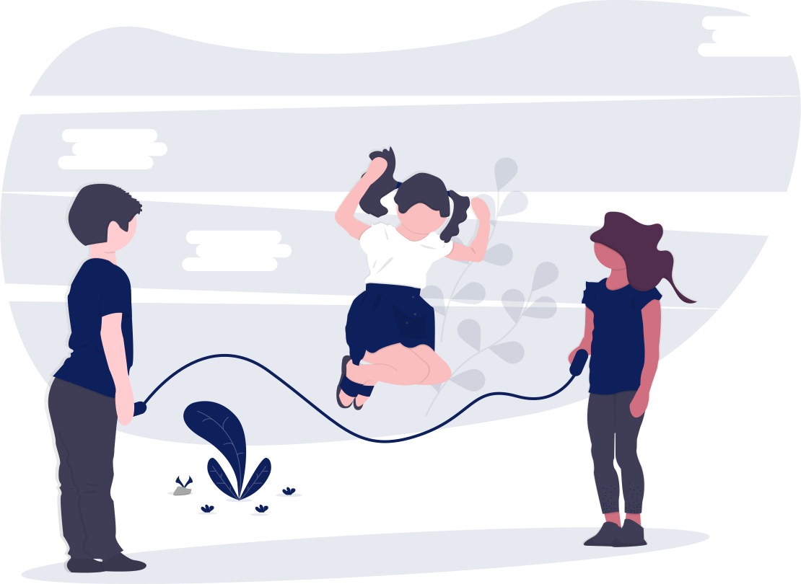

PEDAGOGÍA
Disiplina que se encarga de regular el proceso educativo al igual que resolver los problemas que se suscitan debido a la aparición de la educación.
Arte de transmitir experiencias, conocimientos, valores, con los recursos que tenemos a nuestro alcance.
¿PARA QUE SIRVE?
Educación
1Acción de transmitir y recibir conocimientos
2Es practica
3Educación internacional, científica y sistemática
4Arte educativo
5Filosofía educativa
6Metodologia de la educación
Pedagogía
1Disiplina que se ocupa del estudio del hecho educativo
2Es teoria
3Estar inmerso en el hecho educativo conciente y inconcientemente
4Como hecho real de carácter natural-social-humano
5Como reflexión filosofíca
6Como actividad tecnológica
ELEMENTOS DE LA PEDAGOGÍA
+EDUCACIÓN
Proceso de transmisión de valores culturales que implica un conocimiento y una cualificación en un ser como persona.
+PEDAGOGÍA
Es la ciencia de la educación, proceso de enseñanza aprendisaje.
RAMAS DE LA PEDAGOGÍA
Teoría de la Educación
Que estudia todo el proceso educativo, busca su esencia origen y regularidades.
Elabora los objetivos, contenidos y metodos de la educación de la personalidad.

Teoría de la Didáctica
Estudia la instrucción y la adecuación dentro de la clase.
Elaborando objetivos, contenidos y métodos para el proceso de enseñanza en clase.
La Dirección Escolar
Elaboración de planes, y programas y la dirreción y organización de la educación.
El contenido, los metodos y las formas de organización racional de la educación escolar.